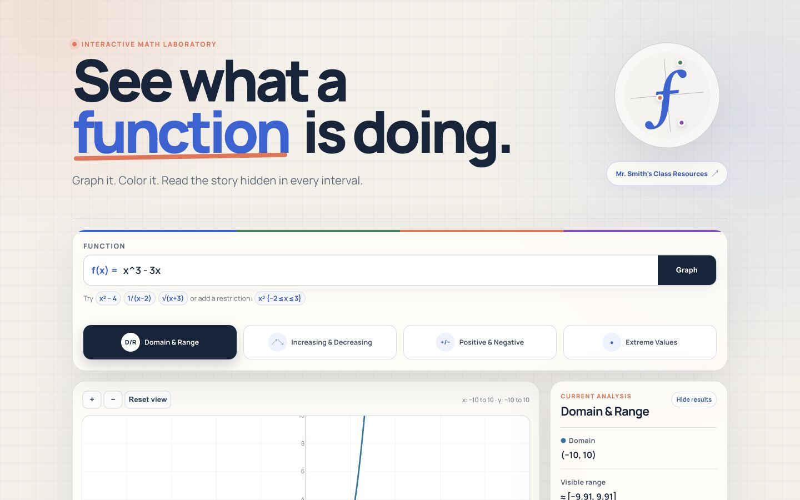
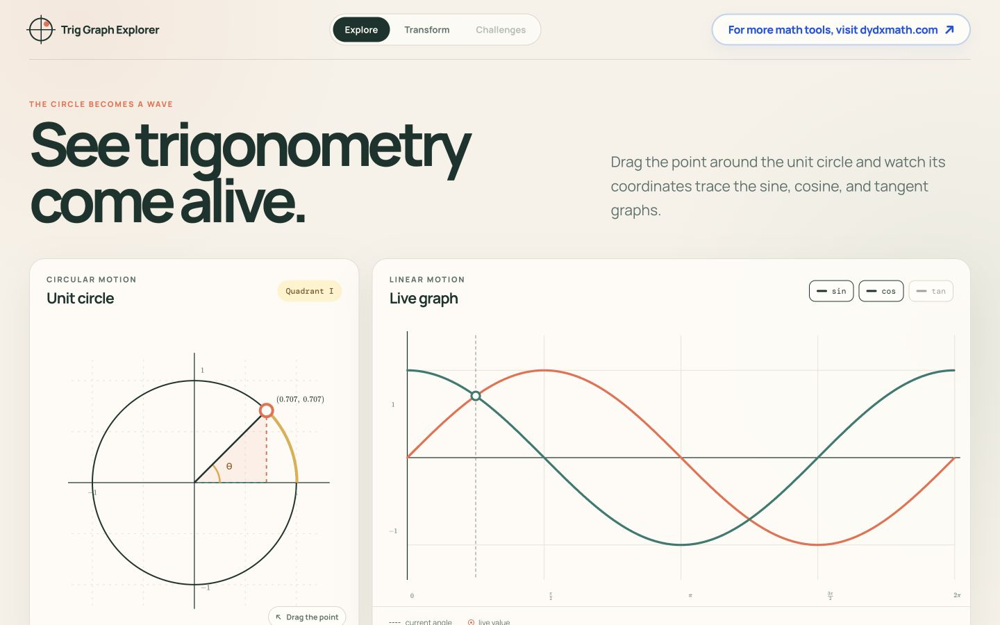
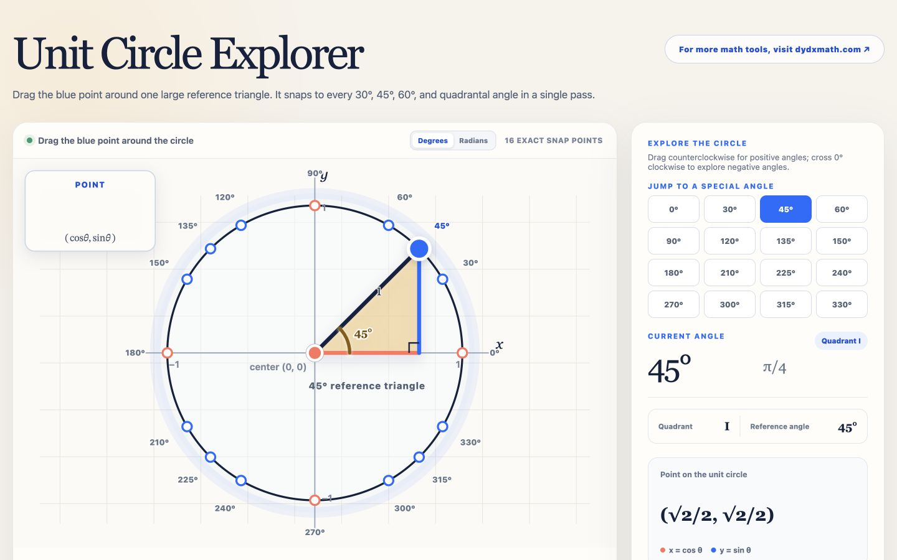

Open explorer ↗Function Features Explorer
Graph a function, restrict its domain, and reveal domain, range, intervals, signs, and extreme values through color-coded analysis.
Explore function behavior ↗Visual mathematics you can move, test, and make your own.
A growing collection
Each explorer is a focused, full-screen environment built to turn an abstract idea into something students can see and manipulate.

Open explorer ↗Graph a function, restrict its domain, and reveal domain, range, intervals, signs, and extreme values through color-coded analysis.
Explore function behavior ↗
Open explorer ↗Move around the unit circle and watch sine, cosine, and tangent emerge as live graphs.
See trigonometry move ↗
Open explorer ↗Drag through special angles and connect reference triangles to exact coordinates and radian measures.
Explore special angles ↗Enter three valid measurements and solve, visualize, and inspect any possible triangle.
Solve a triangle ↗This collection will grow as new mathematical ideas become interactive.